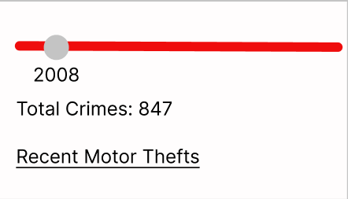
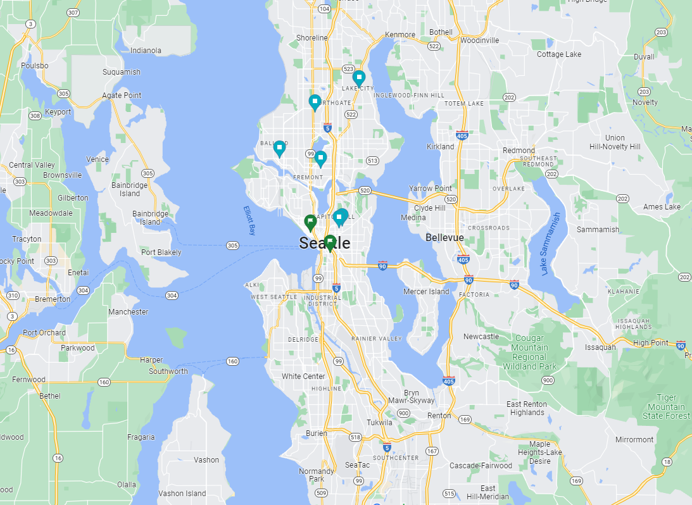

Our map will be able to display the Motor Vehicle thefts by year in the city of Seattle. The user will be able to choose the year that is displayed and even zoom into the specific street or block to see exactly where the vehicle theft occurred. When clicking on a specific point the user will be able to see the time when the vehicle was considered stolen as well as the ‘100’ level block address logged by the police.
